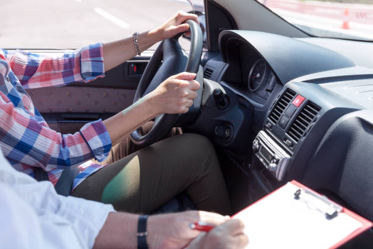
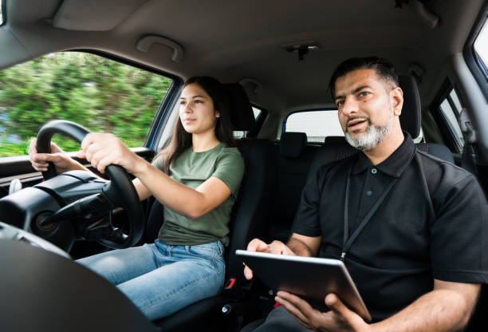
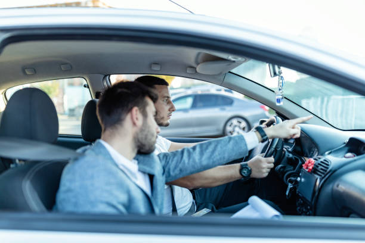

Contact section text



×

Când vine vorba de promovarea examenului de conducere este esențial a avea o înțelegere solidă a reglementărilor de conducere. Nu numai că acest fapt vă va ajuta să vă simțiți mai încrezători și mai pregătiți în ziua examenului, dar vă va asigura și că aveți cunoștințele necesare pentru a deveni un șofer sigur și responsabil odată ce porniți la drum. La școala de șoferi Cristian Instructor Auto se pune un accent puternic pe educarea elevilor în ceea ce privește regulile de circulație și reglementările locale de conducere. Instructorul nu numai că vă va învăța cum să conduceți, ci vă va oferi și o înțelegere aprofundată a legilor rutiere, a semnelor rutiere și a protocoalelor de siguranță. Această abordare cuprinzătoare a instruirii vă va crește șansele de a promova examenul de conducere și vă va dota cu abilitățile de care aveți nevoie pentru a lua decizii inteligente și sigure în timp ce sunteți la volan.
Școala de șoferi Cristian Instructor Auto este aici pentru a te ajuta să devii un șofer încrezător și priceput. Instructorul Cristian are experiență și pasiune pentru predarea tehnicilor de conducere în siguranță. Fiecare lecție este adaptată pentru a se potrivi nevoilor individuale și stilului dumneavoastră de învățare, indiferent dacă sunteți șofer pentru prima dată sau doriți să vă reîmprospătați abilitățile. Şcoala de Şoferi Cristian vă va oferi cunoștințele și abilitățile de care aveți nevoie pentru a promova examenul de conducere și a porni la drum cu încredere. Programați-vă prima lecție astăzi și începeți călătoria spre a deveni un șofer sigur și capabil.